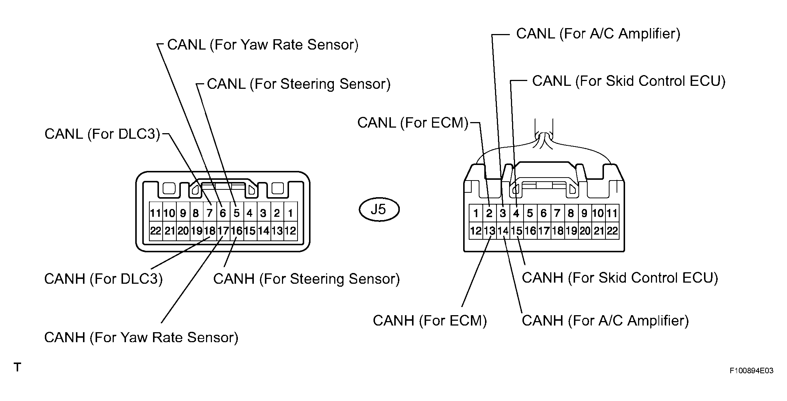
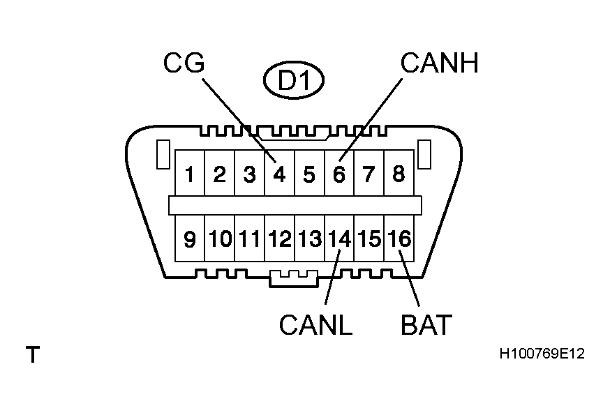
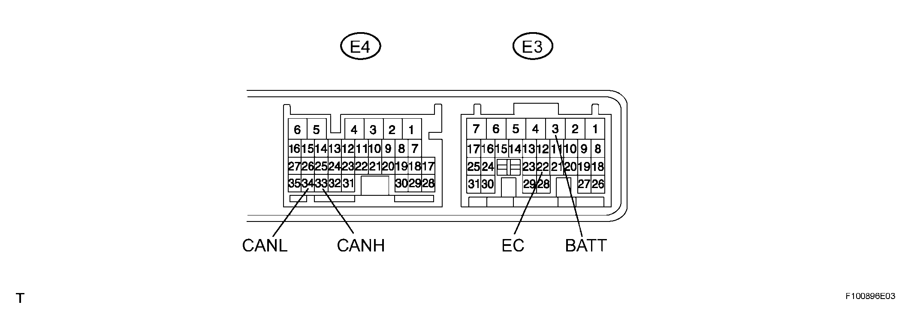
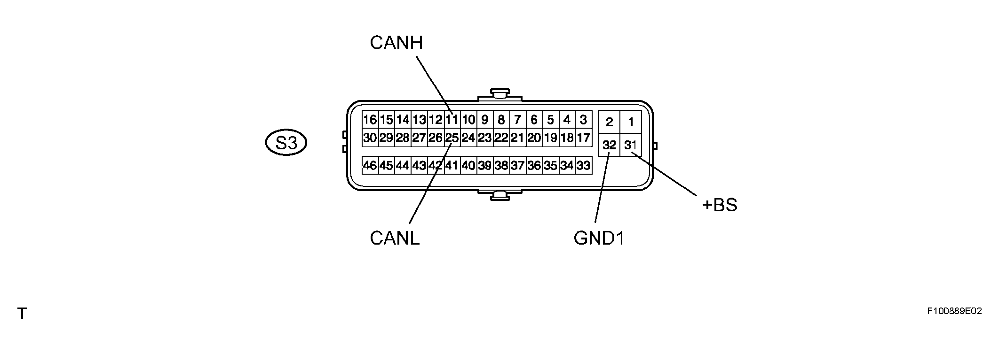
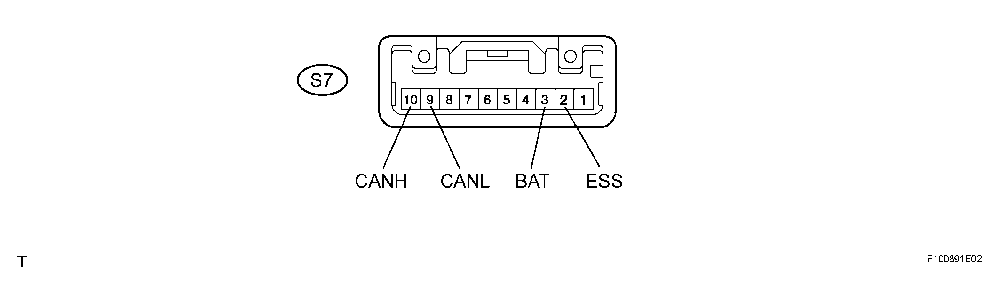
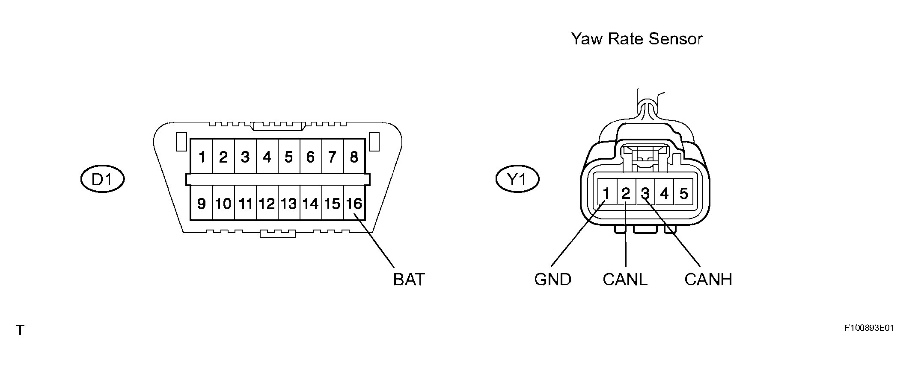

Terminals Of Ecu
- JUNCTION CONNECTOR

Courtesy of © TOYOTA, LICENSE AGREEMENT TMS1002JUNCTION CONNECTOR REFERENCE CHARTJunction Connector Wiring Color Connect to CANH ( J5-13) B ECM CANL ( J5-2) W ECM CANH (J5-14) B A/C Amplifier CANL (J5-3) W A/C Amplifier CANH (J5-15) B Skid Control ECU CANL (J5-4) W Skid Control ECU CANH (J5-16) B Steering Sensor CANL (J5-5) W Steering Sensor CANH (J5-17) B Yaw Rate Sensor CANL (J5-6) W Yaw Rate Sensor CANH (J5-18) B DLC3 CANL (J5-7) W DLC3 - CHECK DLC3
- Measure the resistance of the connector.

Courtesy of © TOYOTA, LICENSE AGREEMENT TMS1002TERMINAL NUMBER SPECIFIED CONDITIONSymbols (Terminal No.) Wiring Color Condition Specified Condition CANH (D1-6) - CANL (D1-14) B - W Ignition switch OFF 54 to 69 Ω CANH (D1-6) - CG (D1-4) B - W-B Ignition switch OFF 3 kΩ or higher CANL (D1-14) - CG (D1-4) W - W-B Ignition switch OFF 3 kΩ or higher CANH (D1-6) - BAT (D1-16) B - B-O Ignition switch OFF 1 MΩ or higher CANL (D1-14) - BAT (D1-16) W - B-O Ignition switch OFF 1 MΩ or higher
- Measure the resistance of the connector.
- CHECK ECM

Courtesy of © TOYOTA, LICENSE AGREEMENT TMS1002- Measure the resistance of the connector.TERMINAL NUMBER SPECIFIED CONDITION
Symbols (Terminal No.) Wiring Color Condition Specified Condition CANH (E4-33) - CANL (E4-34) B - W Ignition switch OFF 54 to 69 Ω - Disconnect the E4 and E3 ECM connectors.
- Measure the resistance of the wire harness side connectors.TERMINAL NUMBER SPECIFIED CONDITION
Symbols (Terminal No.) Wiring Color Condition Specified Condition CANH (E4-33) - CANL (E4-34) B - W Ignition switch OFF 108 to 132 Ω CANH (E4-33) - EC (E3-22) B - W-B Ignition switch OFF 3 kΩ or higher CANL (E4-34) - EC (E3-22) W - W-B Ignition switch OFF 3 kΩ or higher CANH (E4-33) - BATT (E3-3) B - B-Y Ignition switch OFF 1 MΩ or higher CANL (E4-34) - BATT (E3-3) W - B-Y Ignition switch OFF 1 MΩ or higher
- Measure the resistance of the connector.
- CHECK A/C AMPLIFIER Courtesy of © TOYOTA, LICENSE AGREEMENT TMS1002
- Measure the resistance of the connector.TERMINAL NUMBER SPECIFIED CONDITION
Symbols (Terminal No.) Wiring Color Condition Specified Condition CANH (A17-8) - CANL (A17-9) B - W Ignition switch OFF 54 to 69 Ω - Disconnect the A17 amplifier connector.
- Measure the resistance of the wire harness side connector.TERMINAL NUMBER SPECIFIED CONDITION
Symbols (Terminal No.) Wiring Color Condition Specified Condition CANH (A17-8) - CANL (A17-9) B - W Ignition switch OFF 108 to 132 Ω CANH (A17-8) - GND (A17-24) B - W-B Ignition switch OFF 3 kΩ or higher CANL (A17-9) - GND (A17-24) W - W-B Ignition switch OFF 3 kΩ or higher CANH (A17-8) - IG+ (A17-14) B - L Ignition switch OFF 1 MΩ or higher CANL (A17-9) - IG+ (A17-14) W - L Ignition switch OFF 1 MΩ or higher
- Measure the resistance of the connector.
- CHECK BRAKE ACTUATOR ASSEMBLY (SKID CONTROL ECU WITH ACTUATOR)

Courtesy of © TOYOTA, LICENSE AGREEMENT TMS1002- Disconnect the S3 ECU connector.
- Measure the resistance of the wire harness side connector.TERMINAL NUMBER SPECIFIED CONDITION
Symbols (Terminal No.) Wiring Color Condition Specified Condition CANH (S3-11) - CANL (S3-25) B - W Ignition switch OFF 54 to 69 Ω CANH (S3-11) - GND1 (S3-32) B - W-B Ignition switch OFF 3 kΩ or higher CANL (S3-25) - GND1 (S3-32) W - W-B Ignition switch OFF 3 kΩ or higher CANH (S3-11) - +BS (S3-31) B - B Ignition switch OFF 1 MΩ or higher CANL (S3-25) - +BS (S3-31) W - B Ignition switch OFF 1 MΩ or higher
- CHECK STEERING SENSOR

Courtesy of © TOYOTA, LICENSE AGREEMENT TMS1002- Disconnect the S7 sensor connector.
- Measure the resistance of the wire harness side connector.TERMINAL NUMBER SPECIFIED CONDITION
Symbols (Terminal No.) Wiring Color Condition Specified Condition CANH (S7-10) - CANL (S7-9) B - W Ignition switch OFF 54 to 69 Ω CANH (S7-10) - ESS (S7-2) B - W-B Ignition switch OFF 3 kΩ or higher CANL (S7-9) - ESS (S7-2) W - W-B Ignition switch OFF 3 kΩ or higher CANH (S7-10) - BAT (S7-3) B - W-R Ignition switch OFF 1 MΩ or higher CANL (S7-9) - BAT (S7-3) W - W-R Ignition switch OFF 1 MΩ or higher
- CHECK YAW RATE SENSOR

Courtesy of © TOYOTA, LICENSE AGREEMENT TMS1002- Disconnect the Y1 sensor connector.
- Measure the resistance of the wire harness side connectors.TERMINAL NUMBER SPECIFIED CONDITION
Symbols (Terminal No.) Wiring Color Condition Specified Condition CANH (Y1-3) - CANL (Y1-2) B - W Ignition switch OFF 54 to 69 Ω CANH (Y1-3) - GND (Y1-1) B - W-B Ignition switch OFF 3 kΩ or higher CANL (Y1-3) - GND (Y1-1) W - W-B Ignition switch OFF 3 kΩ or higher CANH (Y1-3) - BAT (D1-16) B - B-O Ignition switch OFF 1 MΩ or higher CANL (Y1-2) - BAT (D1-16) W - B-O Ignition switch OFF 1 MΩ or higher